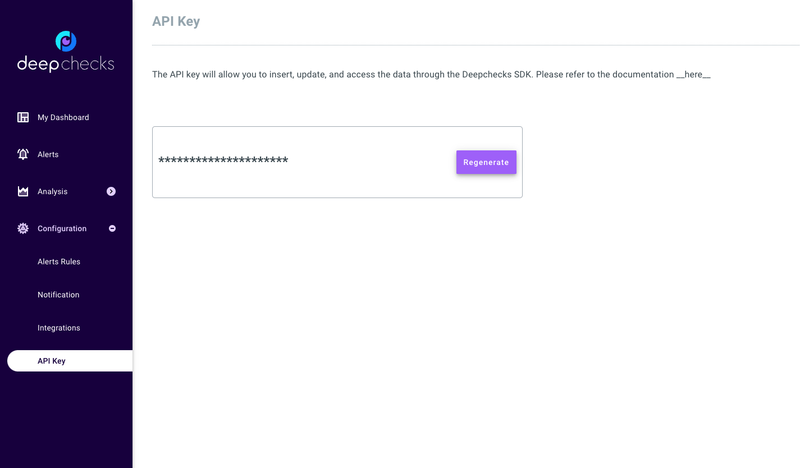
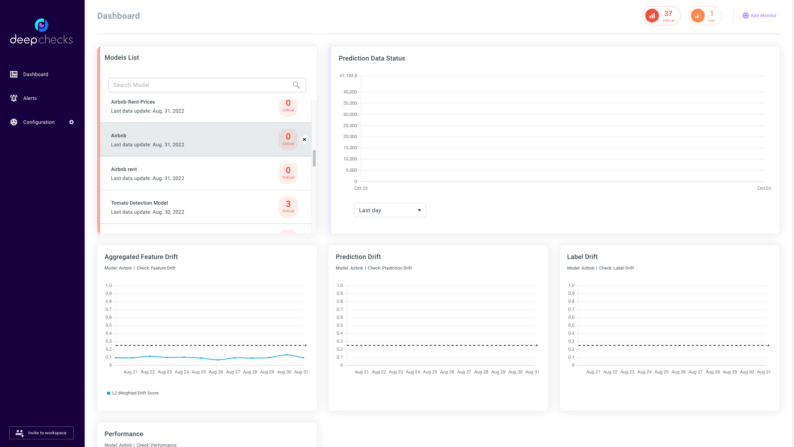

Note
Click here to download the full example code
Quickstart - Get Deepchecks Monitoring Up and Running#
This quickstart is the perfect starting point for monitoring your tabular model using Deepchecks Monitoring. We’ll quickly walk you through setting up a model to represent your task in the system, uploading data, setting the computed checks and alerts in the system and seeing some results for your effort. We’ll be using the Airbnb rent regression dataset, in which the rent of the Airbnb unit is predicted from a set of features describing the rental unit.
# Before we start, if you don't have deepchecks-client installed yet, run:
import sys
!{sys.executable} -m pip install -U deepchecks-client
# or install using pip from your python environment
Creating a New Model Version#
Our first step is to create a new model version in the system. A model in Deepchecks Monitoring represents an ML pipeline performing a single task in production through time, where the model’s versions and the structure of the data may change over time. Our terminology to refer to a specific version within a model is “model version”.
In order to create a version we must specify the feature schema of the version, including the names and types of the features. It is also highly recommended to provide the feature importance of these features, which is used by the system to prioritize features in various calculations and displays.
The easiest way to create a model version, which is demonstrated here, requires a Dataset object containing the reference data for the version. Reference data is a dataset to which we wish to compare our production data stream. Typically, this will be the dataset on which the model was trained. Providing reference data is optional yet many important checks such as Train Test Feature Drift (Tabular Version) cannot run without it.
Preparing the Reference Data#
from deepchecks.tabular.datasets.regression.airbnb import load_data, \
load_pre_calculated_prediction, load_pre_calculated_feature_importance
ref_dataset, _ = load_data(data_format='Dataset')
ref_predictions, _ = load_pre_calculated_prediction()
feature_importance = load_pre_calculated_feature_importance()
feature_importance
neighbourhood_group 0.1
neighbourhood 0.2
room_type 0.1
minimum_nights 0.1
number_of_reviews 0.1
reviews_per_month 0.1
calculated_host_listings_count 0.1
availability_365 0.1
has_availability 0.1
dtype: float64
Creating the Data Schema#
Schema file contains the description of the data (features and additional data) associated with a model version. It is highly recommended to review the created schema file before moving forward to creating the model version.
from deepchecks_client import DeepchecksClient, create_schema, read_schema
schema_file_path = 'schema_file.yaml'
create_schema(dataset=ref_dataset, schema_output_file=schema_file_path)
read_schema(schema_file_path)
# Note: for conveniently changing the auto-inferred schema it's recommended to edit the textual file with an app of your choice.
# After editing, you can use the `read_schema` function to verify the validity of the syntax in your updated schema.
Schema was successfully generated and saved to schema_file.yaml.
{'additional_data': {}, 'features': {'availability_365': 'integer', 'calculated_host_listings_count': 'integer', 'has_availability': 'categorical', 'minimum_nights': 'integer', 'neighbourhood': 'categorical', 'neighbourhood_group': 'categorical', 'number_of_reviews': 'integer', 'reviews_per_month': 'numeric', 'room_type': 'categorical'}}
Creating a model version#
In order to create a model version we must first create an organization in the deepchecks system and generate a personal API token using the application’s dashboard.
{kind=link}
Using the API token we can now create a new model version and upload the reference data. For classification tasks, also predicted probabilities can be sent through the reference_proba argument, enabling computation of probability based metrics such as AUC, log_loss, brier scorer and more.
import os
# Point the host to deepchecks app
host = os.environ.get('DEEPCHECKS_API_HOST') # Replace this with https://app.deepchecks.com
# note to put the API token in your environment variables. Or alternatively (less recommended):
# os.environ['DEEPCHECKS_API_TOKEN'] = 'uncomment-this-line-and-insert-your-api-token-here'
dc_client = DeepchecksClient(host=host, token=os.getenv('DEEPCHECKS_API_TOKEN'))
model_name = 'Airbnb'
model_version = dc_client.create_tabular_model_version(model_name=model_name, version_name='ver_1',
schema=schema_file_path,
feature_importance=feature_importance.to_dict(),
reference_dataset=ref_dataset,
reference_predictions=ref_predictions,
task_type='regression')
Model Airbnb was successfully created!. Default checks, monitors and alerts added.
Model version ver_1 was successfully created.
Reference data uploaded.
Uploading Production Data#
No matter what else you’ll be doing with Deepchecks Monitoring, it will start by uploading some production data that you want monitored. In this example we will upload as a batch the data and predictions stored for the month of August 2022 then update the labels for some of the samples we uploaded.
Uploading Data and Predictions#
Same as with the reference data, for classification tasks also predicted probabilities can be sent enabling computation of probability based metrics such as AUC, log_loss, brier scorer and more.
import pandas as pd
timestamp, label_col = 'datestamp', 'price'
_, prod_data = load_data(data_format='DataFrame')
_, prod_predictions = load_pre_calculated_prediction()
prod_predictions = pd.Series(prod_predictions, index=prod_data.index)
# If labels arrive along with the data it is possible to upload them directly via the labels param.
model_version.log_batch(sample_ids=prod_data.index,
data=prod_data.drop([timestamp, label_col], axis=1),
timestamps=prod_data[timestamp], predictions=prod_predictions)
/home/runner/work/mon/mon/.venv/lib/python3.9/site-packages/deepchecks_client/tabular/client.py:579: UserWarning:
Index of provided "data" dataframe completely matches "sample_ids" array, are you sure that "samples_ids" array is correct and contains correct identifiers?
10000 new samples were successfully logged.
10000 new samples were successfully logged.
10000 new samples were successfully logged.
10000 new samples were successfully logged.
2225 new samples were successfully logged.
Updating the Labels#
In many real world scenarios, the labels of the data are only available at a later time. We can update them in hindsight using the global sample ids.
model_version.update_batch(sample_ids=prod_data.index, labels=prod_data[label_col])
# We can verify that status of the process that is running in the background by checking
# the amount of samples that have been processed and uploaded by the system, using:
# model_version.time_window_statistics(min(prod_data[timestamp]), max(prod_data[timestamp]))
# upon completion, the statistics should equal the total number of samples sent
10000 samples were successfully updated.
10000 samples were successfully updated.
10000 samples were successfully updated.
10000 samples were successfully updated.
2225 samples were successfully updated.
The Dashboard Screen#
After creating the model version and uploading the data, we can now see the monitors within the application dashboard. The monitors below are generated by default when a new model is created, all versions of the same model are tracked within the same monitor.
{kind=link}
If we wish to remove the model do free up space for new models we can do it in the following way:
# CAUTION: This will delete the model, all model versions, and all associated datasets.
dc_client.delete_model(model_name)
The following model was successfully deleted: Airbnb
Total running time of the script: ( 0 minutes 53.216 seconds)